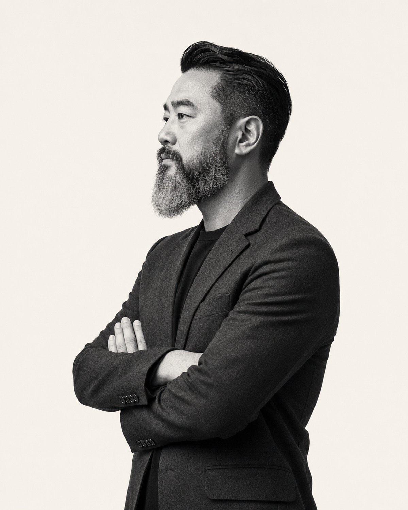

品牌策略 / 案例摘要
CASE 003TRUST SYSTEM
保健品產業・品牌策略・AI 商業應用
我是大鬍子藥師 Brian。從配方、法規、製造，到品牌、通路與 AI，拆解一門生意真正運作的底層邏輯。

01 / BUSINESS AUTOPSY
不只告訴你品牌做了什麼，更追問：它為什麼有效、靠什麼成立，以及什麼不能直接複製。
沒有符合的文章，試試其他關鍵字。
02 / MARKET SIGNALS
不是你的產品好不好，而是消費者為什麼現在要買。
信任不是一句口號，而是一連串可以被驗證的設計。
配方只是起點；法規、體驗、通路與複購才構成生意。
03 / VIDEO BRIEFING
從影音觀點切入，看看品牌與產業背後值得追問的問題。影片請前往 Facebook 專頁瀏覽。
04 / ABOUT BRIAN
藥師、博士候選人、保健品產業顧問，也是 AI 商業應用的實踐者。長期參與配方研發、法規、製造、品牌與跨境市場，把第一線經驗整理成可以理解、可以判斷、也可以行動的商業觀點。
LET'S DISSECT THE NEXT OPPORTUNITY